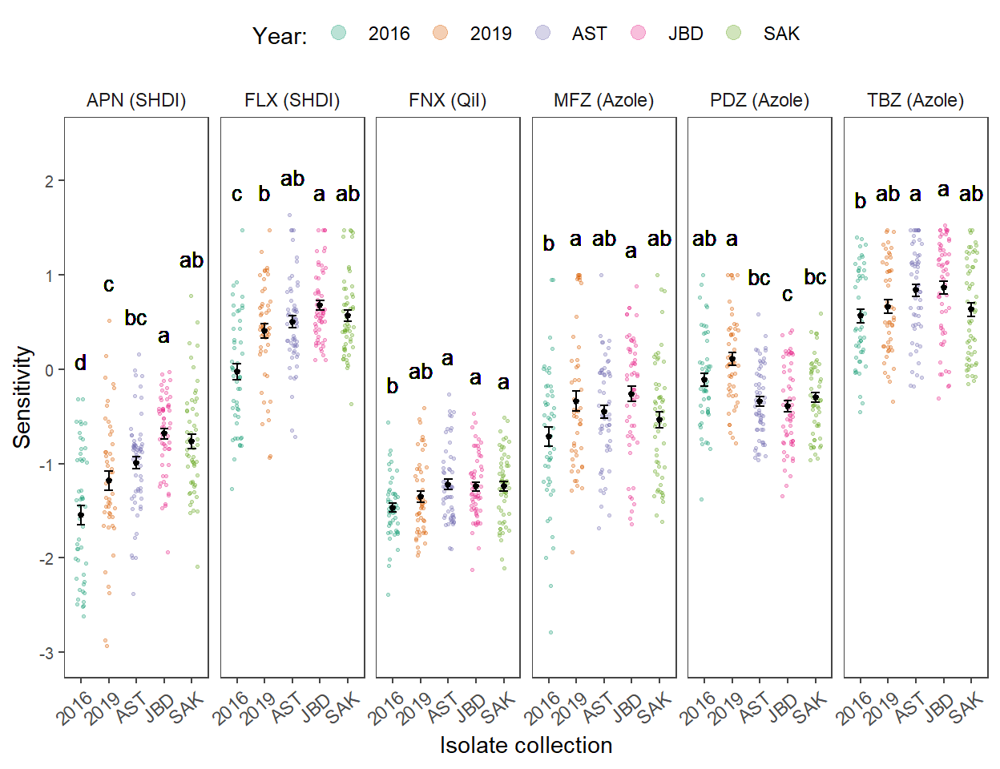
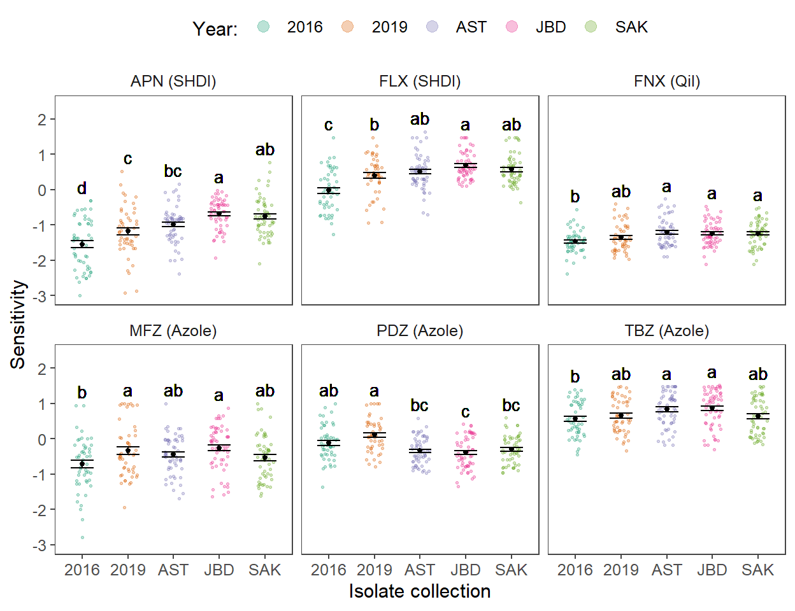

Fungicide sensitivity assessments
Load packages
## [1] "All packages were successfully loaded."## [1] "dplyr" "tidyr" "ggplot2"
## [4] "knitr" "readxl" "egg"
## [7] "car" "emmeans" "effects"
## [10] "multcomp" "broom" "dotwhisker"
## [13] "broom.mixed" "agricolae" "ggpubr"
## [16] "ggplot2" "knitr" "here"
## [19] "PerformanceAnalytics" "readxl" "Hmisc"
## [22] "GGally" "corrplot"Import data
## Isolate Year Chemical EC50
## Length:1614 Length:1614 Length:1614 Min. :-3.0000
## Class :character Class :character Class :character 1st Qu.:-0.9819
## Mode :character Mode :character Mode :character Median :-0.3204
## Mean :-0.3056
## 3rd Qu.: 0.3621
## Max. : 1.6358
## NA's :5Fitting models
## Df Sum Sq Mean Sq F value Pr(>F)
## Year 4 25.31 6.326 18.41 2.34e-13 ***
## Residuals 264 90.72 0.344
## ---
## Signif. codes: 0 '***' 0.001 '**' 0.01 '*' 0.05 '.' 0.1 ' ' 1## Tukey multiple comparisons of means
## 95% family-wise confidence level
##
## Fit: aov(formula = APN ~ Year, data = dta)
##
## $Year
## diff lwr upr p adj
## 2019-2016 0.36811202 0.044444749 0.6917793 0.0168337
## AST-2016 0.55721347 0.246487819 0.8679391 0.0000146
## JBD-2016 0.86432081 0.552335826 1.1763058 0.0000000
## SAK-2016 0.78449566 0.469871169 1.0991202 0.0000000
## AST-2019 0.18910145 -0.123322327 0.5015252 0.4590315
## JBD-2019 0.49620879 0.182532498 0.8098851 0.0001920
## SAK-2019 0.41638365 0.100081954 0.7326853 0.0032756
## JBD-AST 0.30710734 0.006802917 0.6074118 0.0422203
## SAK-AST 0.22728219 -0.075763495 0.5303279 0.2407469
## SAK-JBD -0.07982514 -0.384161942 0.2245117 0.9516668## Tukey multiple comparisons of means
## 95% family-wise confidence level
##
## Fit: aov(formula = APN ~ Year, data = dta)
##
## $Year
## diff lwr upr p adj
## 2019-2016 0.36811202 0.044444749 0.6917793 0.0168337
## AST-2016 0.55721347 0.246487819 0.8679391 0.0000146
## JBD-2016 0.86432081 0.552335826 1.1763058 0.0000000
## SAK-2016 0.78449566 0.469871169 1.0991202 0.0000000
## AST-2019 0.18910145 -0.123322327 0.5015252 0.4590315
## JBD-2019 0.49620879 0.182532498 0.8098851 0.0001920
## SAK-2019 0.41638365 0.100081954 0.7326853 0.0032756
## JBD-AST 0.30710734 0.006802917 0.6074118 0.0422203
## SAK-AST 0.22728219 -0.075763495 0.5303279 0.2407469
## SAK-JBD -0.07982514 -0.384161942 0.2245117 0.9516668## $statistics
## MSerror Df Mean CV
## 0.3436357 264 -1.0174 -57.61791
##
## $parameters
## test name.t ntr StudentizedRange alpha
## Tukey Year 5 3.884455 0.05
##
## $means
## APN std r Min Max Q25 Q50
## 2016 -1.5481410 0.7161302 50 -3.000000 -0.31451053 -2.2051428 -1.4482921
## 2019 -1.1800290 0.7025294 49 -2.930650 0.51851394 -1.5338226 -1.1866469
## AST -0.9909276 0.5146735 58 -2.378586 0.16035483 -1.2943918 -0.8709644
## JBD -0.6838202 0.4215659 57 -1.938074 -0.02429144 -0.9137959 -0.6089694
## SAK -0.7636454 0.5585928 55 -2.090002 0.77582989 -1.1931498 -0.8335500
## Q75
## 2016 -0.9552615
## 2019 -0.7949046
## AST -0.7901017
## JBD -0.3924923
## SAK -0.4230141
##
## $comparison
## NULL
##
## $groups
## APN groups
## JBD -0.6838202 a
## SAK -0.7636454 ab
## AST -0.9909276 bc
## 2019 -1.1800290 c
## 2016 -1.5481410 d
##
## attr(,"class")
## [1] "group"Fenpicoxamid
## Df Sum Sq Mean Sq F value Pr(>F)
## Year 4 2.23 0.5583 4.073 0.00321 **
## Residuals 261 35.78 0.1371
## ---
## Signif. codes: 0 '***' 0.001 '**' 0.01 '*' 0.05 '.' 0.1 ' ' 1
## 3 observations deleted due to missingness## Tukey multiple comparisons of means
## 95% family-wise confidence level
##
## Fit: aov(formula = FNX ~ Year, data = dta)
##
## $Year
## diff lwr upr p adj
## 2019-2016 0.115921745 -0.08852041 0.3203639 0.5260541
## AST-2016 0.247115461 0.04838511 0.4458458 0.0065675
## JBD-2016 0.222596943 0.02553382 0.4196601 0.0179751
## SAK-2016 0.224465877 0.02573552 0.4231962 0.0179860
## AST-2019 0.131193715 -0.06859603 0.3309835 0.3735579
## JBD-2019 0.106675198 -0.09145623 0.3048066 0.5770792
## SAK-2019 0.108544131 -0.09124561 0.3083339 0.5683526
## JBD-AST -0.024518518 -0.21675072 0.1677137 0.9967534
## SAK-AST -0.022649584 -0.21659055 0.1712914 0.9976966
## SAK-JBD 0.001868934 -0.19036327 0.1941011 0.9999999## $statistics
## MSerror Df Mean CV
## 0.1370795 261 -1.301306 -28.45161
##
## $parameters
## test name.t ntr StudentizedRange alpha
## Tukey Year 5 3.884764 0.05
##
## $means
## FNX std r Min Max Q25 Q50 Q75
## 2016 -1.467867 0.3235372 50 -2.389514 -0.5583899 -1.648433 -1.482538 -1.3176616
## 2019 -1.351945 0.4059032 49 -1.973711 -0.4080534 -1.688401 -1.428896 -1.0583018
## AST -1.220751 0.3988887 55 -1.905766 -0.2646526 -1.554726 -1.259383 -1.0090504
## JBD -1.245270 0.3453364 57 -2.121834 -0.4668240 -1.487408 -1.319063 -1.0257168
## SAK -1.243401 0.3719266 55 -2.107144 -0.5132036 -1.533607 -1.203895 -0.9904763
##
## $comparison
## NULL
##
## $groups
## FNX groups
## AST -1.220751 a
## SAK -1.243401 a
## JBD -1.245270 a
## 2019 -1.351945 ab
## 2016 -1.467867 b
##
## attr(,"class")
## [1] "group"## Df Sum Sq Mean Sq F value Pr(>F)
## Year 4 15.48 3.871 16.39 5.26e-12 ***
## Residuals 264 62.36 0.236
## ---
## Signif. codes: 0 '***' 0.001 '**' 0.01 '*' 0.05 '.' 0.1 ' ' 1## Tukey multiple comparisons of means
## 95% family-wise confidence level
##
## Fit: aov(formula = FLX ~ Year, data = dta)
##
## $Year
## diff lwr upr p adj
## 2019-2016 0.43212192 0.16376467 0.7004792 0.0001381
## AST-2016 0.53252074 0.27489357 0.7901479 0.0000004
## JBD-2016 0.70831344 0.44964215 0.9669847 0.0000000
## SAK-2016 0.59862616 0.33776641 0.8594859 0.0000000
## AST-2019 0.10039881 -0.15863629 0.3594339 0.8244830
## JBD-2019 0.27619152 0.01611794 0.5362651 0.0311678
## SAK-2019 0.16650424 -0.09574610 0.4287546 0.4089307
## JBD-AST 0.17579271 -0.07319406 0.4247795 0.2992140
## SAK-AST 0.06610542 -0.18515417 0.3173650 0.9511423
## SAK-JBD -0.10968728 -0.36201736 0.1426428 0.7548594## $statistics
## MSerror Df Mean CV
## 0.2362258 264 0.4355348 111.594
##
## $parameters
## test name.t ntr StudentizedRange alpha
## Tukey Year 5 3.884455 0.05
##
## $means
## FLX std r Min Max Q25 Q50
## 2016 -0.03048186 0.5971514 50 -1.2696653 1.477108 -0.4725977 -0.0730426
## 2019 0.40164006 0.5373873 49 -0.9395399 1.477121 0.1927675 0.4417933
## AST 0.50203888 0.4816302 58 -0.7146025 1.635752 0.2483513 0.4955497
## JBD 0.67783158 0.3776901 57 0.1021444 1.477121 0.4120069 0.5969382
## SAK 0.56814430 0.4264079 55 -0.3670181 1.477121 0.2532252 0.4589290
## Q75
## 2016 0.4319779
## 2019 0.6916897
## AST 0.7163198
## JBD 0.9648940
## SAK 0.7840239
##
## $comparison
## NULL
##
## $groups
## FLX groups
## JBD 0.67783158 a
## SAK 0.56814430 ab
## AST 0.50203888 ab
## 2019 0.40164006 b
## 2016 -0.03048186 c
##
## attr(,"class")
## [1] "group"## Df Sum Sq Mean Sq F value Pr(>F)
## Year 4 6.52 1.6297 3.725 0.00573 **
## Residuals 264 115.49 0.4375
## ---
## Signif. codes: 0 '***' 0.001 '**' 0.01 '*' 0.05 '.' 0.1 ' ' 1## Tukey multiple comparisons of means
## 95% family-wise confidence level
##
## Fit: aov(formula = MFZ ~ Year, data = dta)
##
## $Year
## diff lwr upr p adj
## 2019-2016 0.37544697 0.01025516 0.74063878 0.0405182
## AST-2016 0.26227426 -0.08831560 0.61286412 0.2431106
## JBD-2016 0.45291882 0.10090806 0.80492958 0.0043693
## SAK-2016 0.17846087 -0.17652803 0.53344977 0.6405032
## AST-2019 -0.11317271 -0.46567856 0.23933314 0.9034190
## JBD-2019 0.07747185 -0.27644720 0.43139090 0.9748023
## SAK-2019 -0.19698610 -0.55386738 0.15989517 0.5529298
## JBD-AST 0.19064456 -0.14818709 0.52947621 0.5338776
## SAK-AST -0.08381339 -0.42573800 0.25811122 0.9620120
## SAK-JBD -0.27445795 -0.61783931 0.06892341 0.1846293## $statistics
## MSerror Df Mean CV
## 0.4374644 264 -0.4568642 -144.7719
##
## $parameters
## test name.t ntr StudentizedRange alpha
## Tukey Year 5 3.884455 0.05
##
## $means
## MFZ std r Min Max Q25 Q50
## 2016 -0.7142640 0.7445016 50 -2.784500 0.9516352 -1.1812634 -0.6069143
## 2019 -0.3388170 0.7567105 49 -1.934464 1.0000000 -0.9115005 -0.4598453
## AST -0.4519897 0.5428365 58 -1.682441 1.0000000 -0.7946237 -0.4802192
## JBD -0.2613451 0.6285287 57 -1.643941 0.8768086 -0.6617156 -0.2111216
## SAK -0.5358031 0.6372171 55 -1.613926 1.0000000 -1.0562258 -0.5158055
## Q75
## 2016 -0.24293586
## 2019 0.09286155
## AST -0.03848179
## JBD 0.20878952
## SAK -0.18310722
##
## $comparison
## NULL
##
## $groups
## MFZ groups
## JBD -0.2613451 a
## 2019 -0.3388170 a
## AST -0.4519897 ab
## SAK -0.5358031 ab
## 2016 -0.7142640 b
##
## attr(,"class")
## [1] "group"## Df Sum Sq Mean Sq F value Pr(>F)
## Year 4 8.75 2.1886 11.29 1.8e-08 ***
## Residuals 263 50.97 0.1938
## ---
## Signif. codes: 0 '***' 0.001 '**' 0.01 '*' 0.05 '.' 0.1 ' ' 1
## 1 observation deleted due to missingness## Tukey multiple comparisons of means
## 95% family-wise confidence level
##
## Fit: aov(formula = PDZ ~ Year, data = dta)
##
## $Year
## diff lwr upr p adj
## 2019-2016 0.22214944 -0.02213832 0.466437199 0.0941999
## AST-2016 -0.22961416 -0.46423393 0.005005607 0.0584048
## JBD-2016 -0.27721339 -0.51277375 -0.041653031 0.0119756
## SAK-2016 -0.18804211 -0.42557406 0.049489834 0.1926480
## AST-2019 -0.45176360 -0.68638337 -0.217143834 0.0000026
## JBD-2019 -0.49936283 -0.73492319 -0.263802472 0.0000002
## SAK-2019 -0.41019155 -0.64772350 -0.172659606 0.0000338
## JBD-AST -0.04759923 -0.27311777 0.177919303 0.9779603
## SAK-AST 0.04157205 -0.18600509 0.269149181 0.9871417
## SAK-JBD 0.08917128 -0.13937544 0.317717994 0.8209237## $statistics
## MSerror Df Mean CV
## 0.1937833 263 -0.2196902 -200.3768
##
## $parameters
## test name.t ntr StudentizedRange alpha
## Tukey Year 5 3.884557 0.05
##
## $means
## PDZ std r Min Max Q25 Q50
## 2016 -0.1130642 0.4974643 49 -1.3732612 1.0000000 -0.4528214 -0.18008423
## 2019 0.1090853 0.4754179 49 -0.7802108 1.0000000 -0.2318320 0.07464519
## AST -0.3426783 0.3821992 58 -0.9630885 0.5859782 -0.6371971 -0.37285946
## JBD -0.3902776 0.4560134 57 -1.3421704 0.4132425 -0.7604344 -0.46406224
## SAK -0.3011063 0.3912446 55 -0.9605234 0.5951164 -0.5945104 -0.31089774
## Q75
## 2016 0.106268056
## 2019 0.418813127
## AST -0.046571623
## JBD 0.035271905
## SAK -0.004054269
##
## $comparison
## NULL
##
## $groups
## PDZ groups
## 2019 0.1090853 a
## 2016 -0.1130642 ab
## SAK -0.3011063 bc
## AST -0.3426783 bc
## JBD -0.3902776 c
##
## attr(,"class")
## [1] "group"## Df Sum Sq Mean Sq F value Pr(>F)
## Year 4 3.73 0.9335 3.596 0.00712 **
## Residuals 263 68.27 0.2596
## ---
## Signif. codes: 0 '***' 0.001 '**' 0.01 '*' 0.05 '.' 0.1 ' ' 1
## 1 observation deleted due to missingness## Tukey multiple comparisons of means
## 95% family-wise confidence level
##
## Fit: aov(formula = TBZ ~ Year, data = dta)
##
## $Year
## diff lwr upr p adj
## 2019-2016 0.09747827 -0.1852611221 0.38021767 0.8781549
## AST-2016 0.27171807 0.0001684402 0.54326770 0.0497718
## JBD-2016 0.29845139 0.0258131070 0.57108966 0.0239875
## SAK-2016 0.06639194 -0.2085282590 0.34131214 0.9639885
## AST-2019 0.17423980 -0.0973098323 0.44578943 0.3978158
## JBD-2019 0.20097311 -0.0716651655 0.47361139 0.2570187
## SAK-2019 -0.03108633 -0.3060065315 0.24383387 0.9979702
## JBD-AST 0.02673331 -0.2342825251 0.28774915 0.9986225
## SAK-AST -0.20532613 -0.4687246000 0.05807234 0.2058984
## SAK-JBD -0.23205944 -0.4965801090 0.03246122 0.1159021
## $statistics
## MSerror Df Mean CV
## 0.2595886 263 0.7190166 70.86045
##
## $parameters
## test name.t ntr StudentizedRange alpha
## Tukey Year 5 3.884557 0.05
##
## $means
## TBZ std r Min Max Q25 Q50 Q75
## 2016 0.5652876 0.5042321 49 -0.4498578 1.401063 0.1844393 0.4511855 1.042483
## 2019 0.6627659 0.4938552 49 -0.3414015 1.477121 0.2414139 0.5473586 1.119086
## AST 0.8370057 0.4930212 58 -0.1793866 1.477121 0.4721400 0.8847330 1.208746
## JBD 0.8637390 0.5297143 57 -0.3074298 1.525544 0.4414984 1.0426936 1.285752
## SAK 0.6316796 0.5233884 55 -0.1542300 1.477121 0.1362570 0.6110398 1.120301
##
## $comparison
## NULL
##
## $groups
## TBZ groups
## JBD 0.8637390 a
## AST 0.8370057 a
## 2019 0.6627659 ab
## SAK 0.6316796 ab
## 2016 0.5652876 b
##
## attr(,"class")
## [1] "group"Convert the data in longer format.
Publication plot
Prepare the data for plotting.
Plot in one row.

Plot in two rows.

Cross-resistance between fungicides
Correlation charts
## List of 3
## $ r: num [1:6, 1:6] 1 NA 0.5 -0.5 NA NA NA 1 NA NA ...
## ..- attr(*, "dimnames")=List of 2
## .. ..$ : chr [1:6] "APN" "FNX" "FLX" "MFZ" ...
## .. ..$ : chr [1:6] "APN" "FNX" "FLX" "MFZ" ...
## $ n: int [1:6, 1:6] 3 0 3 3 0 0 0 1 0 0 ...
## ..- attr(*, "dimnames")=List of 2
## .. ..$ : chr [1:6] "APN" "FNX" "FLX" "MFZ" ...
## .. ..$ : chr [1:6] "APN" "FNX" "FLX" "MFZ" ...
## $ P: num [1:6, 1:6] NA NaN 0.667 0.667 NaN ...
## ..- attr(*, "dimnames")=List of 2
## .. ..$ : chr [1:6] "APN" "FNX" "FLX" "MFZ" ...
## .. ..$ : chr [1:6] "APN" "FNX" "FLX" "MFZ" ...
## - attr(*, "class")= chr "rcorr"## png
## 2## APN FNX FLX MFZ PDZ TBZ
## APN 1.00000000 0.41555117 0.7302628 0.5415755 0.02853355 0.4401973
## FNX 0.41555117 1.00000000 0.4420474 0.3977872 0.05796908 0.2357230
## FLX 0.73026275 0.44204739 1.0000000 0.4867796 0.17783377 0.2999092
## MFZ 0.54157548 0.39778723 0.4867796 1.0000000 0.27227302 0.7797880
## PDZ 0.02853355 0.05796908 0.1778338 0.2722730 1.00000000 -0.0765985
## TBZ 0.44019732 0.23572296 0.2999092 0.7797880 -0.07659850 1.0000000## APN FNX FLX MFZ PDZ
## APN NA 1.575184e-12 0.000000e+00 0.000000e+00 6.419131e-01
## FNX 1.575184e-12 NA 3.752554e-14 1.614353e-11 3.472186e-01
## FLX 0.000000e+00 3.752554e-14 NA 0.000000e+00 3.489387e-03
## MFZ 0.000000e+00 1.614353e-11 0.000000e+00 NA 6.120247e-06
## PDZ 6.419131e-01 3.472186e-01 3.489387e-03 6.120247e-06 NA
## TBZ 3.952394e-14 1.071154e-04 5.662079e-07 0.000000e+00 2.113188e-01
## TBZ
## APN 3.952394e-14
## FNX 1.071154e-04
## FLX 5.662079e-07
## MFZ 0.000000e+00
## PDZ 2.113188e-01
## TBZ NA## APN FNX FLX MFZ PDZ
## APN 0.000000e+00 2.000625e-13 4.595506e-56 1.914730e-19 9.502367e-01
## FNX 2.000625e-13 0.000000e+00 7.281777e-14 1.514663e-13 3.407590e-01
## FLX 4.595506e-56 7.281777e-14 0.000000e+00 1.961074e-15 7.611044e-02
## MFZ 1.914730e-19 1.514663e-13 1.961074e-15 0.000000e+00 2.414151e-06
## PDZ 9.502367e-01 3.407590e-01 7.611044e-02 2.414151e-06 0.000000e+00
## TBZ 6.517665e-14 1.909759e-05 3.012742e-07 1.594538e-57 5.213850e-01
## TBZ
## APN 6.517665e-14
## FNX 1.909759e-05
## FLX 3.012742e-07
## MFZ 1.594538e-57
## PDZ 5.213850e-01
## TBZ 0.000000e+00Publication plot
## png
## 2